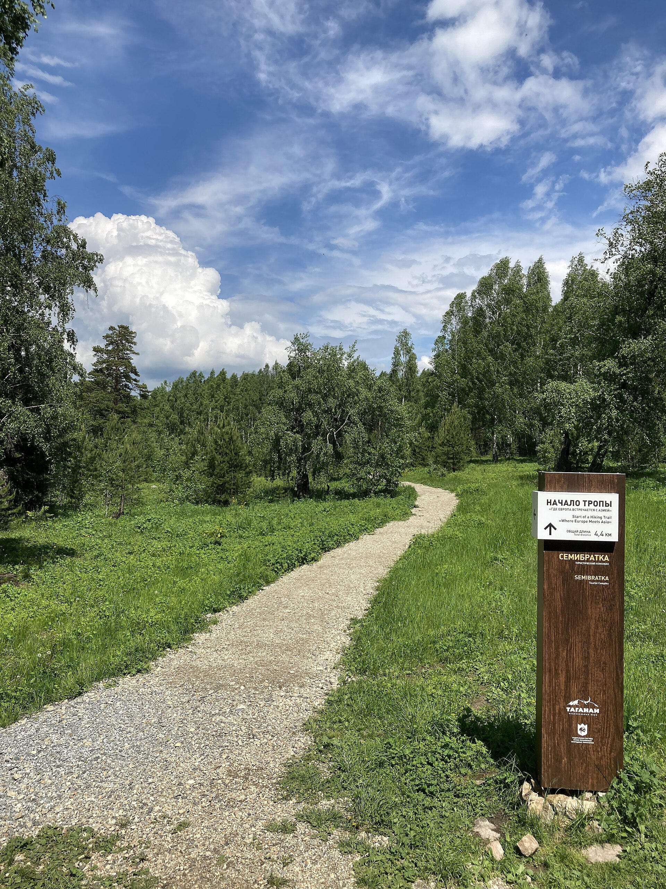

День 01
Из Златоуста — на тропу
Сбор в Златоусте, переезд к входу в парк, инструктаж и первые километры по лесной тропе. К вечеру выходим на стоянку, где ставим лагерь и знакомимся.
Совет: обувь для первого дня лучше разносить заранее. Каменистый подъём не прощает новых ботинок.